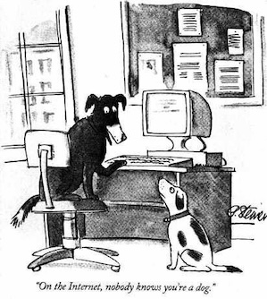
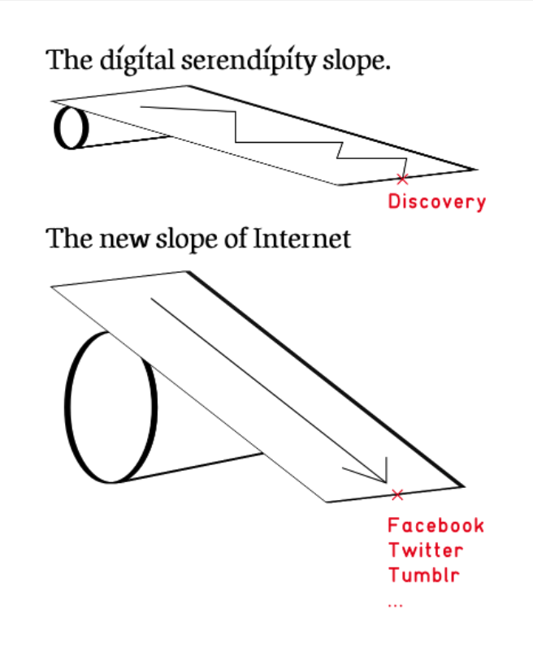

Welcome back ~ Day 3
Chiming in activity
As you get settled in… Think about how this class or the concept of a digital garden has sat in relation to your day-to-day life.
What have you noticed about the commitment of a digital garden? Has it been challenging or changing the pace of usual life? What other things/ideas have come up?
Today’s outline ap
- CHIMING IN ACTIVITY — 15 min
- LECTURE — 15 min
- DISCUSSION + ACTIVITY — 1 hour, with 12 min at each table, plus padding + 15 min
- ANNOUNCE SHOW AND TELL + BREAK — 15 min
- SHOW AND TELL — 45 min
- READING — 15 min
Lecture — How do we think about our digital spaces?
The digital part of digital gardens
So throughout this class we’ve talked a lot about natural metaphors for being on the internet.
- We talked about how to ritualize our practice of tending our knowledge space
- We talked about comparing our websites to gardens
- We talked about different types of gardens
- We talked about what it feels like to be in a garden
In today’s class we wanted to talk about the digital part of digital gardens. So we’re going to break down, or talk a little bit about, the specificities of the digital medium.
All mediums have specificities and qualities, and the web is a medium…
This lecture is going to be fodder for thought for disucussion and after this we're going to have a discussion activity.
1. Free duplication
We can copy a digital file without giving up the one we already have.
The poor image is a copy in motion. Its quality is bad, its resolution substandard. As it accelerates, it deteriorates. It is a ghost of an image, a preview, a thumbnail, an errant idea, an itinerant image distributed for free, squeezed through slow digital connections, compressed, reproduced, ripped, remixed, as well as copied and pasted into other channels of distribution.
You could now download it, re-watch it, reedit it or even improve them. And the new content gets circulated again. The meaning and purpose of the image changed
And with a large number of contributors, these poor images become popular images. It represents the mindset of the people and the number of people who cared enough to reformat them, edit them, add subtitles in the case of cinema and distribute them further. This throws light on a new perspective towards the poor image. Poor images become poor because they get re-edited, compressed, and travel fast. They may lose quality as an image but they gain speed and meaning because of the number of people who are acting upon it.
2. Anonymity / alternate self

Lets you detach what you’re putting out from your identity and lets you be vulnerable.
The Internet has played a novel and important role in exacerbating this tension between identity consistency and change. As the story goes, the web arrived pregnant with possibilities to do away with ascribed identity. It would allow us to rethink who we are by allowing us to transcend geographic location, physical ability, race, gender, age, even species.
The infamous New Yorker cartoon joked that “On the Internet, nobody knows you’re a dog.” But then, as the story continues, social media became commercialized as it went mainstream; it got normal, and, along the way, spontaneous anonymity became replaced by a demand for consistent identity. Now that everyone knows you’re a dog, it’s difficult to be anything else.
3. Linking and traveling through portals (hyperlinks)
AKA the whole point of the web. A web of hyperlinks.
Think about Instagram: links in captions aren’t clickable. The link in bio is one of the few ways out.
Hyperlinks allow us to diversify this topology.
A brief history of the link
1960s ~ Ted Nelson coined the term hypertext and explored the concept of links through Project Xanadu.
How His Vision Differed from the Web
- Two-Way vs. One-Way Links: Nelson envisioned bidirectional links so readers and authors could see connections in both directions, whereas the World Wide Web adopted one-way links.
- Transclusion and Attribution: He advocated including excerpts from other documents while preserving live links and credit to the original source, criticizing standard web links as prone to breaking and lacking built-in context.
Topology of the internet ~

Where do these links take us?
Discussion + activity
Discussion at each table ~ followed by activity.
The web as a medium.
break
Announce show and tell before the break.
Break ~
Show and tell
Show each other what you’ve made and talk about what you might need next.